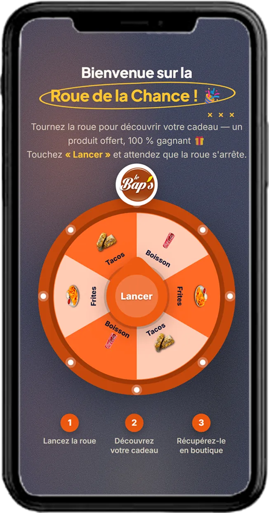
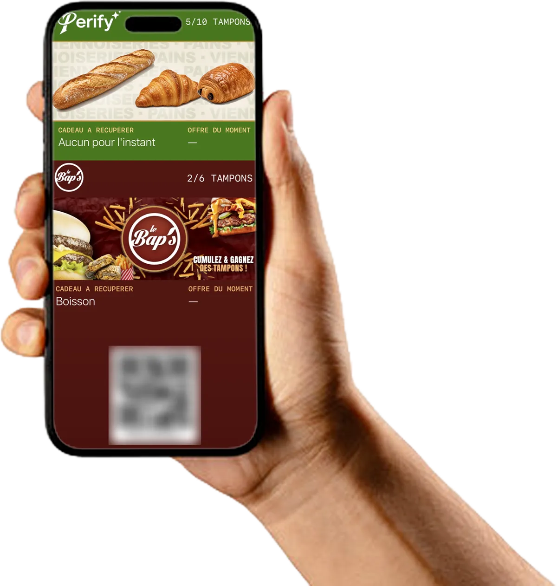
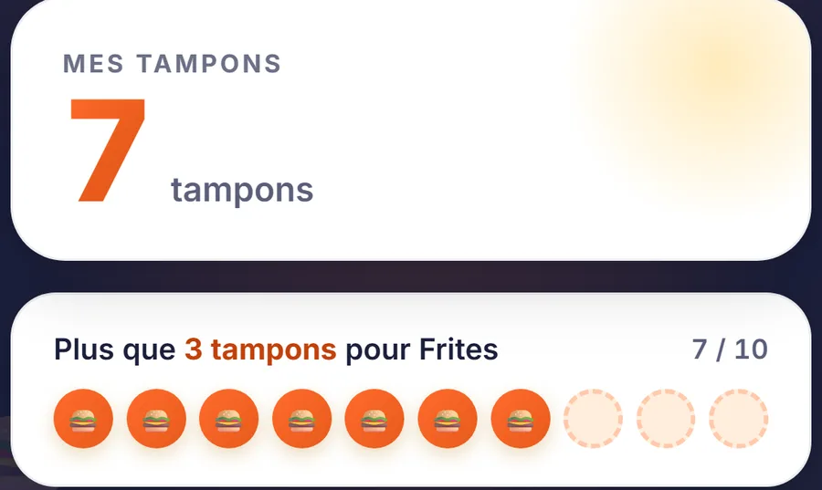

Le client
Il scanne le présentoir
Pas de compte à créer, pas d'appli à télécharger. Sa carte s'ouvre en deux secondes, à vos couleurs. Et il tourne la roue : un cadeau de bienvenue, à chaque nouvelle carte.
Comment ça marche
Rien à brancher sur votre caisse, rien à apprendre. Le présentoir est posé sur le comptoir, tout le reste se passe sur les téléphones.

Le client
Pas de compte à créer, pas d'appli à télécharger. Sa carte s'ouvre en deux secondes, à vos couleurs. Et il tourne la roue : un cadeau de bienvenue, à chaque nouvelle carte.

Son téléphone
La carte reste dans son iPhone, à côté de sa carte bancaire. Sur Android, elle s'ajoute à Google Wallet.

Votre comptoir
Chaque passage ajoute un tampon. Au palier, le cadeau apparaît avec un code que vous vérifiez en caisse.
En chiffres
1. IFOP pour Guest Suite, « Les Français et les avis clients », 2023 : 92 % consultent des avis avant un achat. Voir l'étude.
2. IFOP pour Guest Suite, « Statistiques avis clients & IA », janvier 2026, 1 003 Français de 18 ans et plus. Voir l'étude.
3. SumUp, enquête « Programmes de fidélité en France », avril 2026, 1 500 Français. Voir la source.
Essai gratuit
Présentoir et mise en place compris. Si ça ne vous convient pas, vous arrêtez : rien à payer, je reprends le présentoir, et les données de vos clients sont supprimées.
Essai gratuit 14 jours